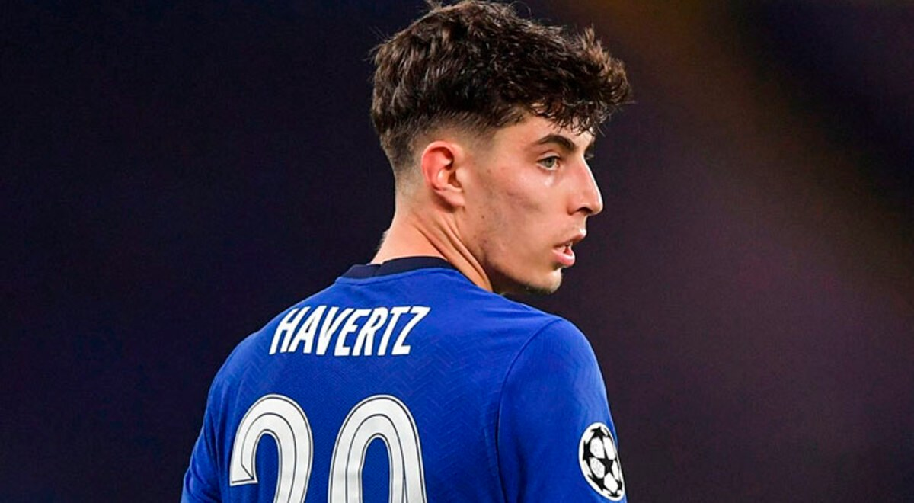
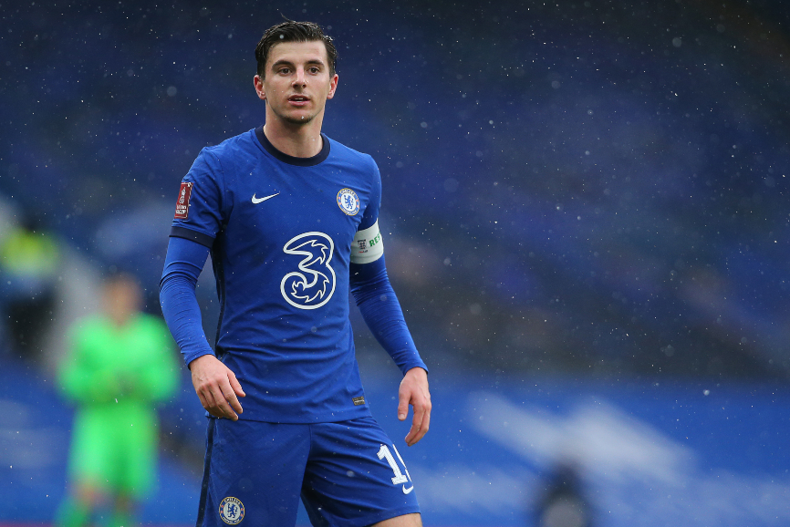
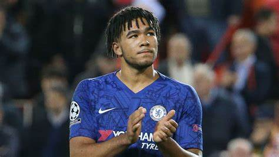

El propietario ruso del Chelsea FC, Roman Abramovich ha cedido la "administración y el cuidado" del club a los administradores de su fundación benéfica. El movimiento llega con Rusia bajo un intenso escrutinio tras la invasión de Ucrania.
Sin especificar si se trata de un retiro temporal o definitivo, el oligarca ruso ha sido señalado como "uno de los 35 hombres clave cercanos a Vladimir Putin", según la diputada liberal demócrata Layla Moran.
Fuente
El gobierno britanico ha lanzado varias sanciones al ultimo campeon de la champion league. Algunas de estas sanciones son:
Algunos jugadores han informado que no cobraran salarios hasta que la situacion actual mejores o se produzca la venta del equipo, entre ellos se encuentran
  
Varias ofertas se han recibido por la compra del club, Abramovich ha informado que el dinero de la venta del club ira destinado a los ciudadodes ucranianos afectados por el conflicto.Algunas ofertas han sido: